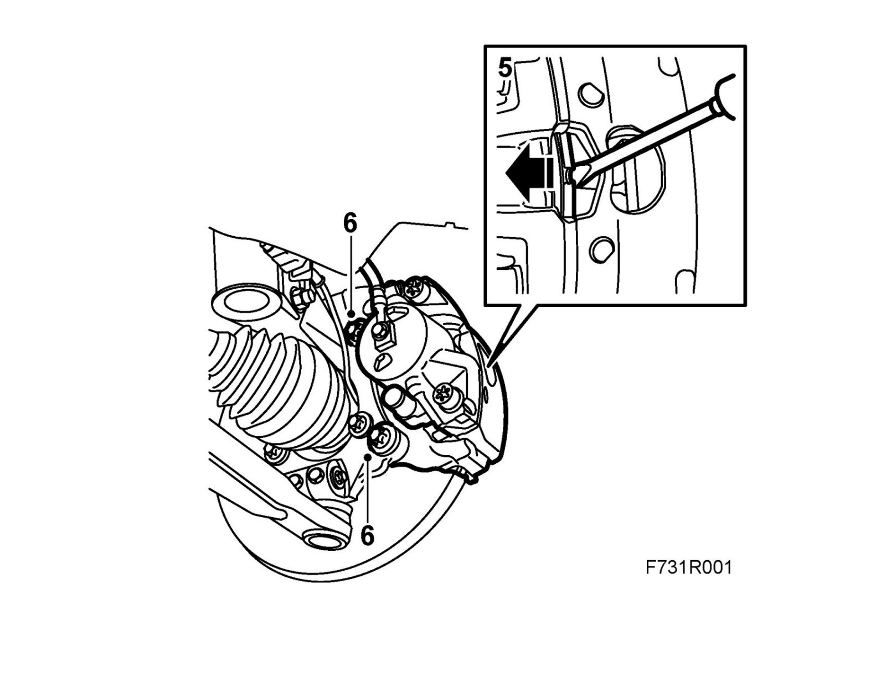
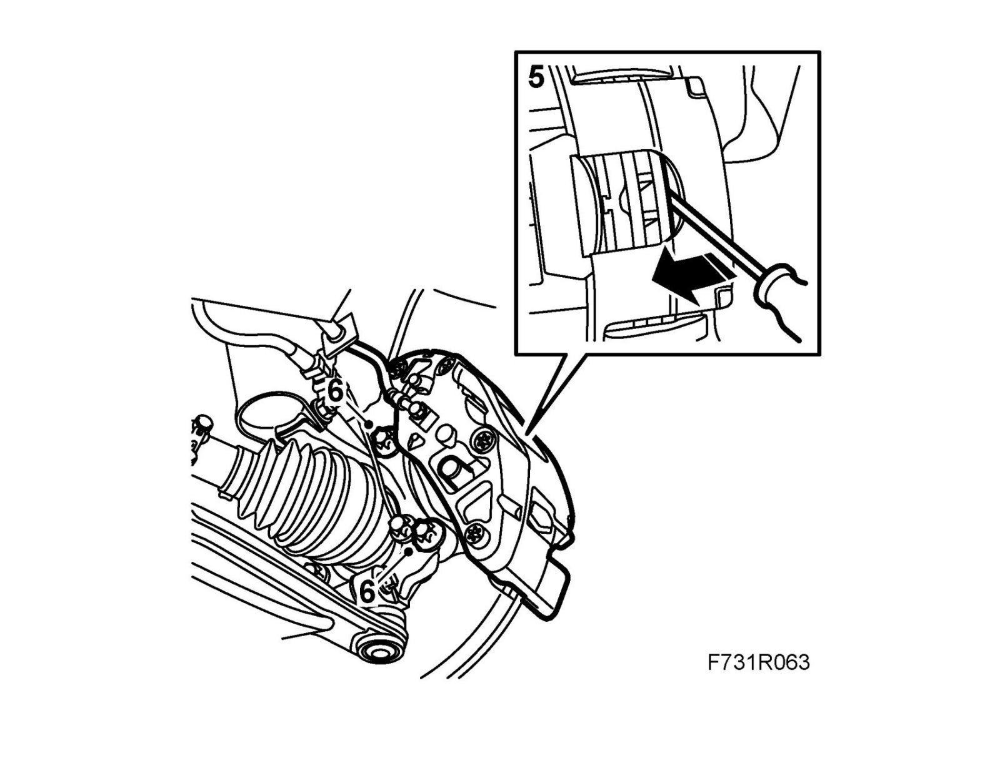
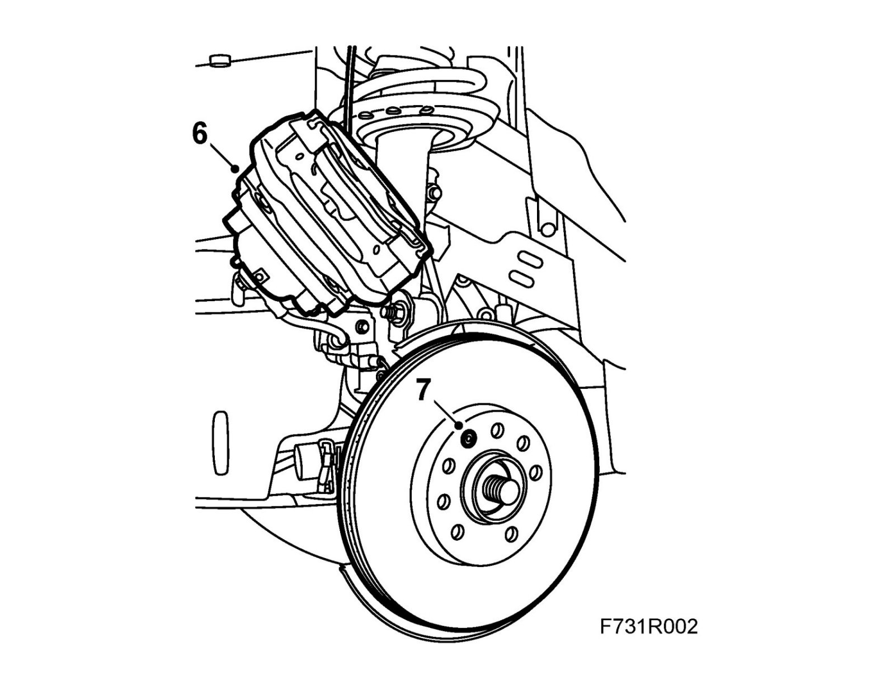
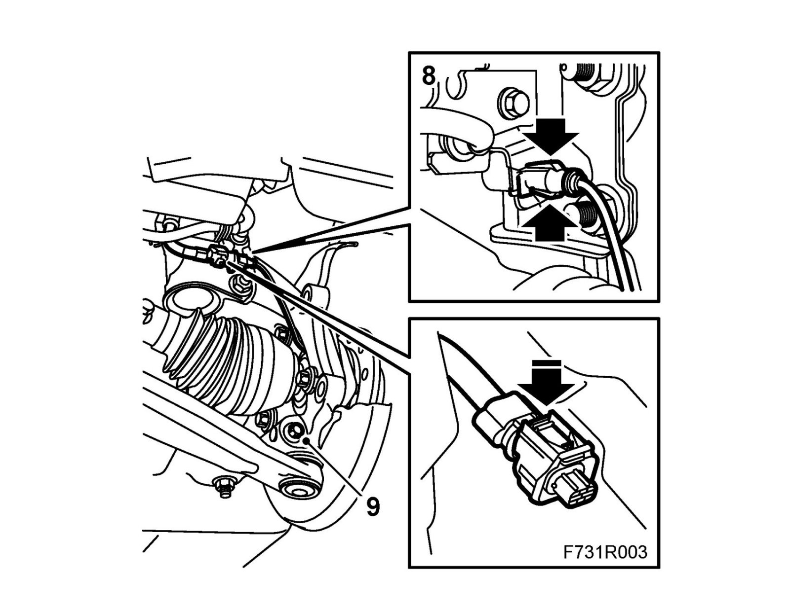
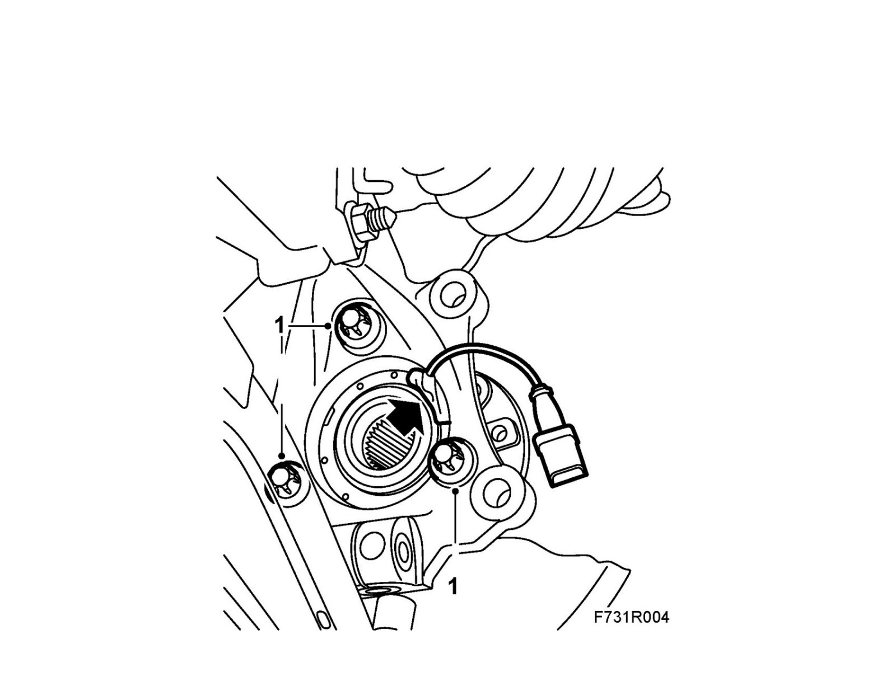
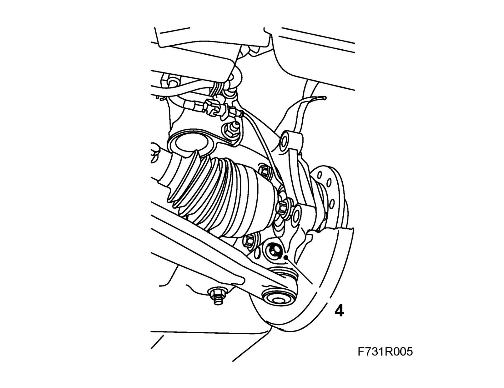
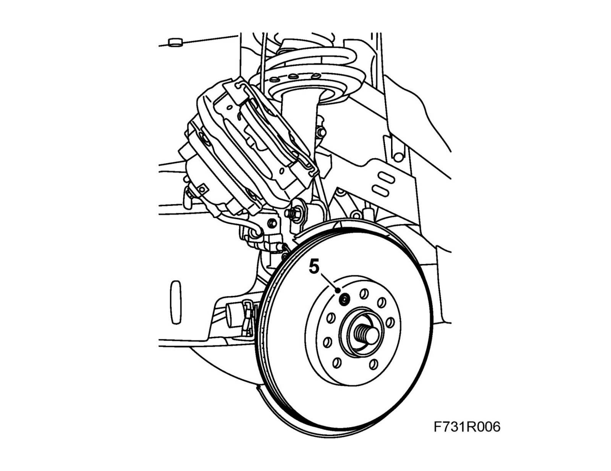
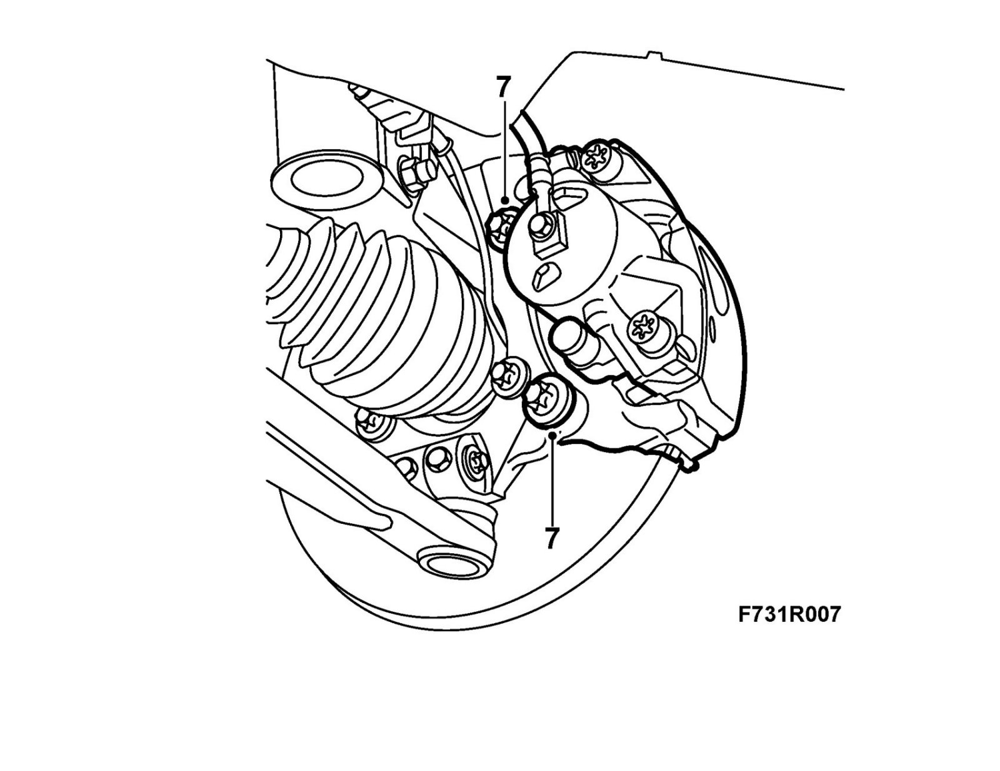

Wheel Hub, Front
Wheel hub, frontTo remove
1. Raise the car.
2. Remove the wheel.
3. Remove the hub nut.
4. Press in the drive shaft so that it loosens from the hub 89 96 951 Puller, hub drive shaft.
5. Press in the piston by prising with a screwdriver against the brake pads.
- Levels 1, 2 and 4 Prise against the brake pad using a screwdriver.

- Level 3: Prise between the brake disc and brake caliper using a screwdriver.

6. Remove the brake caliper and suspend it from the spring
7. Remove the brake disc lock bolt and lift off the brake disc.

8. Remove the wheel sensor connection.

9. Remove the bolt securing the suspension arm ball joint to the steering swivel member.
10. Pull out the ball joint pin.
11. Place a wedge between the suspension arm and the anti-roll bar in order to hold down the suspension arm.
12. Pull the drive shaft out from the hub and lift the hub and steering swivel member from the shaft.
Note
Take care that the inner universal joint does not separate.
13. Remove the three bolts from the hub. Lift off the hub and the brake shield.
To fit
1. Clean the contact surfaces and fit the brake shield and the hub with three bolts.
Make sure that the cable to the wheel sensor fits into position upwards/forwards.
Tightening torque 90 Nm +45° (66 lbf ft +45°)

2. Insert the drive shaft into the hub.
Important
Always fit a new hub-center nut if it has been removed because the clamping force of the lock indentations will be reduced if the old one is refitted.
3. Fit the hub nut and pull the shaft to the correct position with the nut.
4. Remove the wedge and fit the suspension arm to the steering swivel member.
Tightening torque 50 Nm (37 lbf ft)
Warning
Check that the spindle on the ball joint protrudes above the steering swivel member attachment.

5. Clean the brake disc surfaces thoroughly.
Fit the brake disc into place and tighten the brake disc bolts.
Tightening torque 7 Nm (5 lbf ft)

6. Connect the wheel sensor and fit the connector into the holder.
7. Fit the brake caliper.
Tightening torque 210 Nm +30° (155 lbf ft +30°)

8. Fit the wheel.
9. Lower the car so that the wheel rests on the floor.
10. Tighten the hub nut.
Tightening torque 230 Nm (170 lbf ft)
11. Fit the center emblem.
12. Press out the piston in the brake caliper.